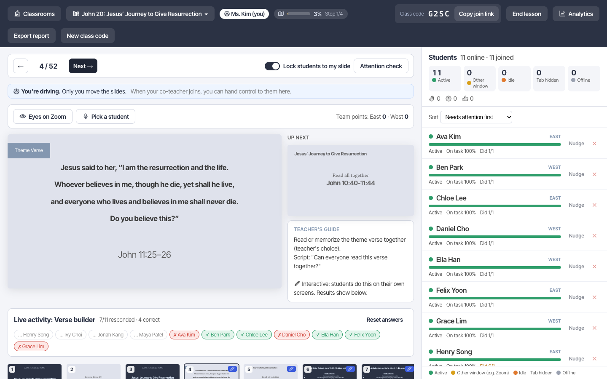
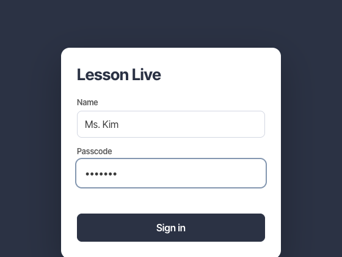
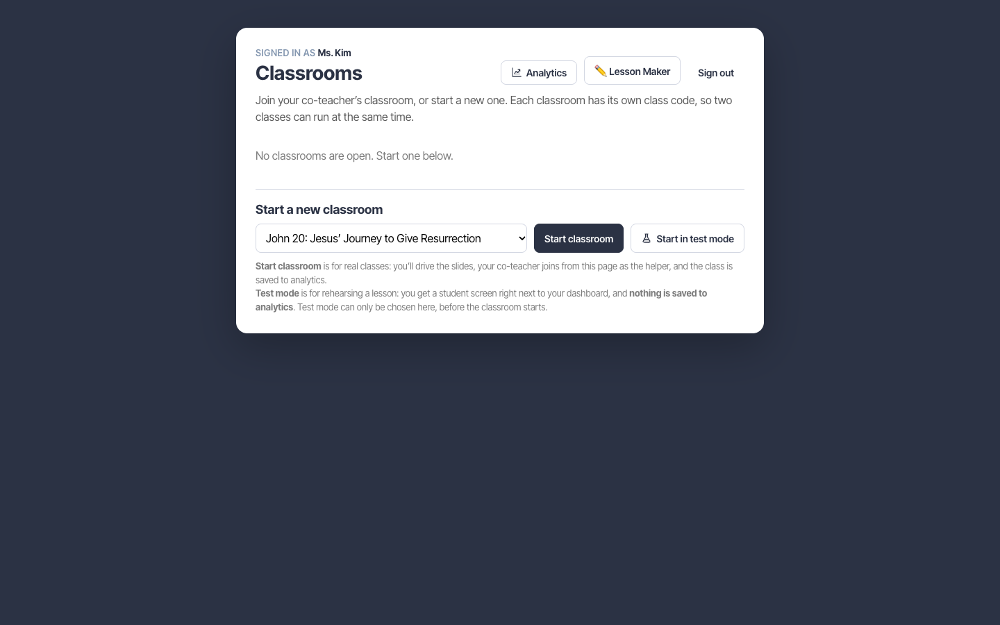
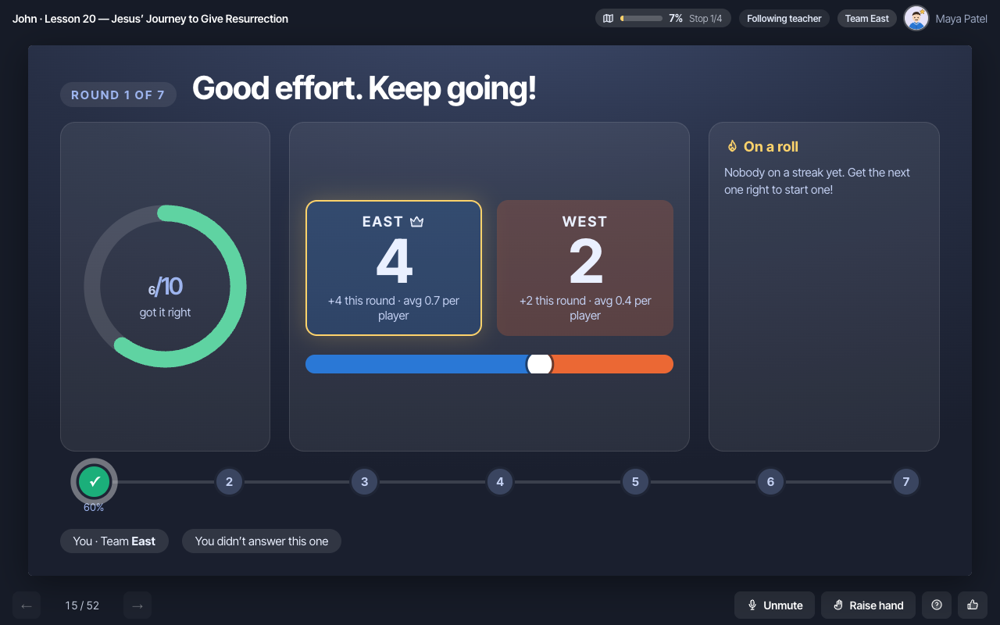
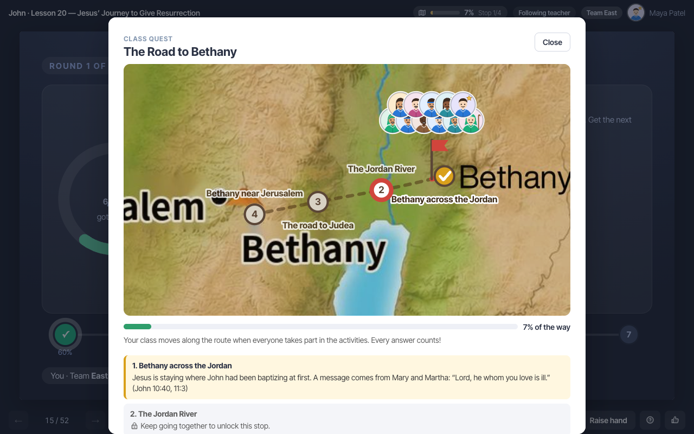
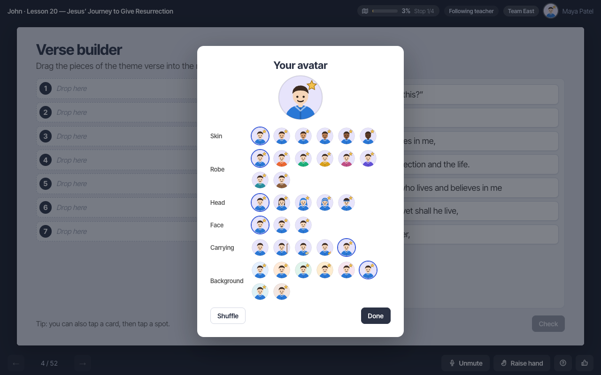
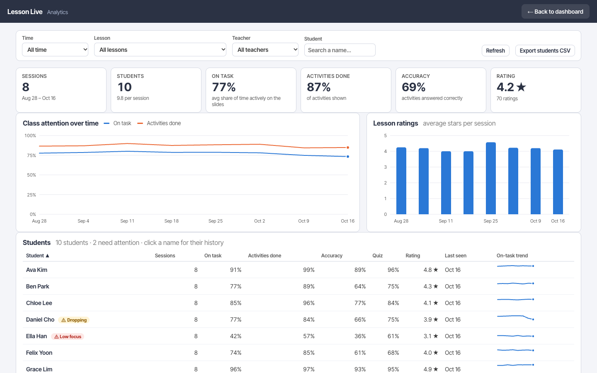
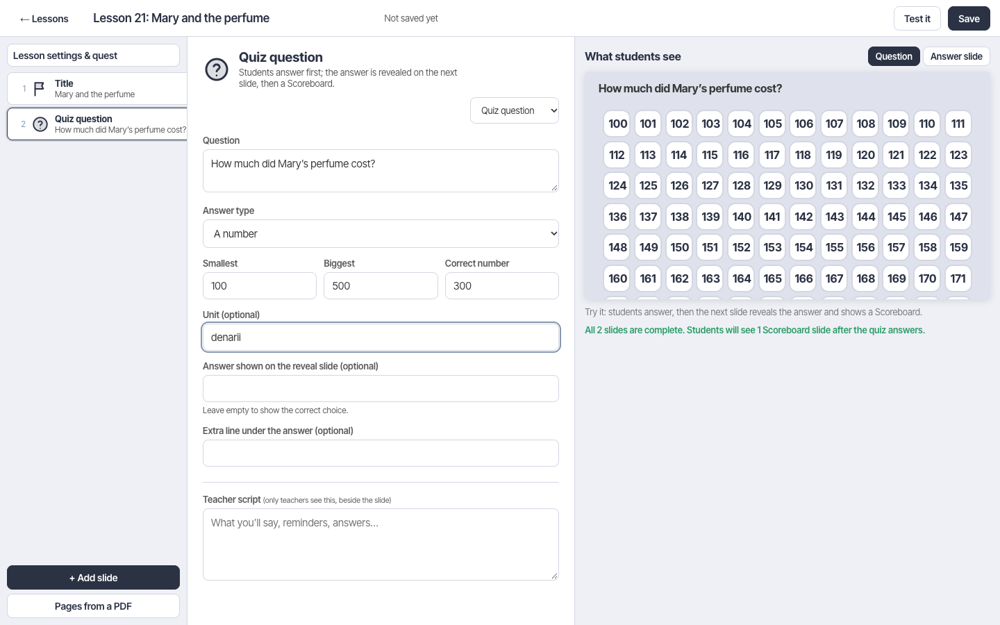
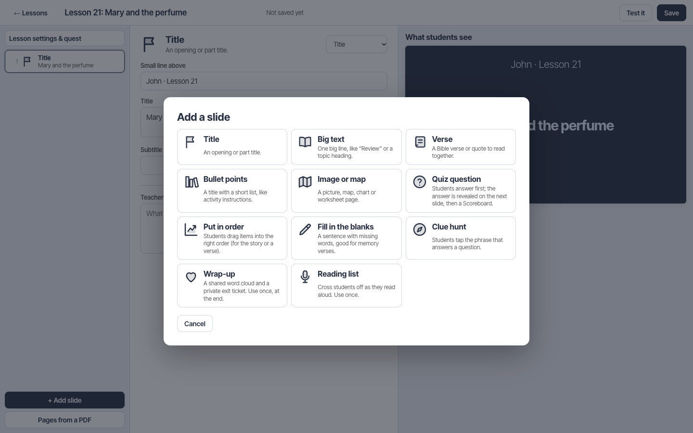
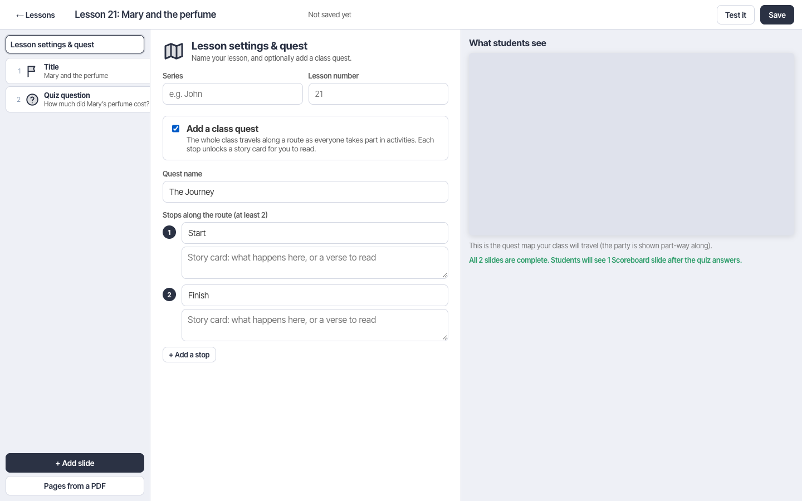

Nothing matches that search.
Lesson Live
An interactive slideshow that runs next to Zoom, so students stay engaged instead of drifting to other tabs.
Students open a link, type their real name, and follow along with slides that the teacher controls. The slides include activities: drag things into order, fill in blanks, answer quizzes, find places on a map, and play a team game-show Scoreboard after each question. Teachers see a live dashboard of who is following along, and an analytics page tracks trends over weeks.
The idea is that the Lesson Live window takes the place of Zoom's shared screen. Teachers do not need to share the slides on Zoom. Students keep Zoom open for audio and discussion, and switch to it only when the teacher wants them to look up or talk.

Quick start for teachers
You need the app's web address and the team passcode. Ask whoever set up the app (see Setting it up).
- Open the teacher page. Go to your app's address followed by
/teacher. If the app was asleep it can take up to a minute to wake, so open it a few minutes before class. - Sign in with your name and the passcode. Your name is shown to students and recorded as "taught by".
- Rehearse first (optional). Choose a lesson and click Start in test mode to try it with a built-in student screen. Nothing is saved. See Test mode.
- Start the classroom. Choose the lesson and click Start classroom. A four-letter class code appears in the header.
- Share the join link. Click Copy join link and paste it into the Zoom chat. Students click it, type their name, and they appear on your roster.
- Teach. Press → or Space to advance. Everyone follows. Your script for each slide is shown beside it.
- End the lesson. Click End lesson to show students the rating form and save the session to analytics.
Signing in and classrooms

Every teacher signs in with their own name and the shared passcode. After signing in you land on Classrooms.

- Open classrooms are listed with their code, lesson and teachers. Click Join on your co-teacher's classroom to help teach it.
- Start classroom creates a new real class: its own code, its own students, saved to analytics.
- Start in test mode makes a rehearsal classroom that is never saved. You must choose this here, before the classroom starts.
- Two pairs of teachers can teach at the same time: each classroom is separate.
- 🏫 Classrooms (top left, once inside) goes back to the list. The class keeps running while you're away.
Teaching a lesson
The dashboard has the current slide on the left (with your teacher's guide and the next slide underneath) and your students on the right.
| Do this | To… |
|---|---|
| → / Space / Next | Go to the next slide. All students follow. |
| ← | Go back one slide. |
| Filmstrip at the bottom | Jump to any slide. |
| Choose a lesson (📚 menu) | Switch lesson. The current session is saved; students stay connected. |
| Lock students to my slide | Stop students from browsing back and forth. Leave it on during discussion. |
| Live activity panel | Under the slide: who has answered, who is right, and Reset answers. |
The roster
Each student is a row with a colored status (Active, Other window, Idle, Tab hidden, Offline), an on-task percentage, and how many activities they've done. Sort by "Needs attention first" to see who to check in on. Nudge sends a friendly pop-up to one student.
Co-teaching and roles
Pairs of teachers teach together, and about five teachers rotate. Here is how it works.
- The teacher who starts the classroom is the 🎮 driver. Only the driver moves slides, changes the lesson, ends the lesson or resets answers.
- Everyone else who joins is a 👩🏫 helper. Helpers see everything live (the roster, who has answered, the script) and can nudge students, pick students, and run attention checks.
- The driver clicks Hand control to … to pass the controls. A helper can click Take control if the driver's internet drops.
- The header shows who is online. Sessions are saved as "Taught by" everyone who joined, and analytics can filter by teacher.
Test mode: rehearse without saving anything
Test mode is for practicing a lesson before teaching it. You get a real student screen right beside the dashboard, so you can do the activities exactly as a student sees them.
- Choose Start in test mode on the Classrooms page. It cannot be turned on after a classroom starts, so real classes can never be mistaken for rehearsals.
- A Test mode · nothing is saved badge stays visible the whole time.
- Nothing is written to analytics, ever.
- You can open the join link on your phone to check the phone layout too.
The Lesson Maker has a Test it button that opens a lesson straight in test mode.
Attention and participation tools
| Tool | What it does |
|---|---|
| Eyes on Zoom | Covers every student's slides with "Look at Zoom and listen in". Paused time never counts against anyone. Click again to resume. |
| Pick a student | Chooses someone at random, favoring students who have been quiet. The picked student sees "You're up!". |
| Attention check | An "I'm here!" button pops up on every screen for 30 seconds. The roster shows who tapped. |
| Nudge | A kind pop-up to one student whose status is idle or away. |
| Hands, ❓ and 👍 | Students signal without speaking. You see counts over the last minute and who raised a hand. Lower all hands clears them. |
| Teams (East / West) | Students are split into two teams automatically. Points from quiz answers add up on the Scoreboard. |
| Reading list | For "read aloud" slides: every student's name in a list, and you cross off each student who has read, so you can see who still needs a turn. Students see whose turn is next. |
Ending a lesson
- Click End lesson. Students see a 1–5 star rating and an optional comment box.
- The session is saved to analytics with attendance, attention, activities, accuracy, ratings and who taught.
- Export report downloads a summary of the session. New class code saves and starts a fresh roster for the next class.
Ratings and comments appear in the dashboard and in Analytics.
Activities
Activities appear on the slide itself. Answers are checked on the server, so students can't see correct answers by looking at their browser.
| Activity | What students do |
|---|---|
| Drag in order | Put a verse, a story or a list into the correct order by dragging. |
| Fill in the blanks | Type or tap words from a word bank to complete a verse. |
| Quiz | Multiple choice, pick a number, or type a short answer. The next slide reveals the answer, then the Scoreboard. |
| Clue hunt | Tap the phrase in a passage that answers a question. |
| Map tap, drag-to and compass | Find places on a map, drag labels or pins to the right spot, or read directions. |
| Timeline and matching | Order events along a timeline or match items in pairs. |
| Worksheet and drawing | Answer questions or draw a response, shown to the teacher. |
| Reading list | See tools: tracks who has read aloud. |
| Acting out | The teacher assigns roles in a scene to students. |
| Wrap-up | A shared word cloud ("one word for today") and a private exit ticket. |
The built-in lesson, John Lesson 20, uses all of these. Lessons you build in the Lesson Maker can use the most common ones (see Slide types).
Scoreboard
After every quiz answer, the next slide is a game-show Scoreboard. It means students never have to look away to see how they did.

- Their own result for the question and a progress track through the quiz.
- East vs West team scores, with the per-player average so teams of different sizes are fair.
- Streaks ("On a roll") and shout-outs for the top players, with their avatars.
Scoreboards are added automatically, in the built-in lesson and in lessons you make.
Class quest
A quest makes the whole class a team. As students take part in activities, their party travels along a route (for example, the road to Bethany). Each stop unlocks a story card to read.

- Progress is the share of the class taking part, so it moves faster when more students do activities. It never goes backwards.
- Students open the map from the Stop 1/4 chip in the header. When the party arrives somewhere, a banner announces it to students and teachers.
- You can add a quest to your own lessons: Lesson settings & quest.
Avatars
Each student can design a little character: background, skin, robe, head and face, and a prop. It appears on the teacher's roster, the Scoreboard shout-outs, the reading list and the quest party. It is saved on the student's own device and only affects looks.

Analytics
Open your app's address followed by /analytics, or click Analytics on the dashboard. Sign in the same way.

- Filter by time period, lesson, teacher or student.
- Summary tiles: sessions, students, on-task %, activities done, accuracy and rating.
- Charts: class attention over time and lesson ratings.
- Students table: each student's attendance, on-task %, accuracy and trend. A badge flags a student who is Dropping or has Low focus, so you can follow up kindly.
- Export CSV for spreadsheets. Click a student's name for their history.
Lesson Maker
Build your own lessons in the browser: no code. Open your app's address followed by /lessons, or click Lesson Maker on the teacher dashboard. Sign in the same way.

- New lesson, then type a title at the top.
- Add slides with + Add slide and choose a type. Fill in the form: the preview updates as you type.
- Write a teacher script in the box at the bottom of each form. Only teachers see it, next to the slide.
- Reorder, duplicate or delete slides with the little buttons that appear when you hover a slide (always visible on touch screens).
- Pages from a PDF turns pages of your slide PDF (maps, worksheets, charts) into picture slides. The PDF stays on your computer; only the pages you choose are uploaded as images.
- Save (it also saves automatically after the first save), then Test it to rehearse in test mode.
- Your lesson now appears in the lesson menu on the dashboard for every teacher.

Things to know
- An unfinished slide shows an orange dot and is skipped for students until it is complete. The panel under the preview lists what is missing.
- A quiz becomes three slides for students: the question, the answer reveal, then the Scoreboard.
- You can't edit or delete a lesson while a real class with students is using it. Practice rooms are fine.
- Editing a lesson updates it for new students right away. Use Duplicate on the lesson list to make a copy first.
- The built-in lessons can't be edited, but you can duplicate ideas from them.
Lesson settings and quest
Click Lesson settings & quest at the top of the slide list to set the series and lesson number, and to add a class quest with a name and 2 to 8 stops. Each stop has a name and a story card you read when the class arrives.

Slide types
| Type | Use it for | You provide |
|---|---|---|
| Title | Opening or part title | Small line above, title, subtitle |
| Big text | A heading or a single thought | One line (and an optional small line above) |
| Verse | Theme verse or quote | Lines of text, reference |
| Bullet points | Instructions, summaries | Title, bullets, optional footer |
| Image or map | Pictures, maps, worksheets | Upload an image or pick a PDF page |
| Quiz question | Check understanding | Question, then multiple choice (mark the correct one), a number (min, max, answer), or a short typed answer (accepted answers) |
| Put in order | Story sequence or verse | 3–10 items listed in the correct order; students see them shuffled |
| Fill in the blanks | Memory verses | Text with [[word]] blanks; use [[word|other]] for alternatives; optional wrong words for the bank |
| Clue hunt | Find the answer in a passage | The text split into phrases (one per line), and which phrase is correct |
| Wrap-up | End of lesson | A word-cloud question and an exit-ticket question. Use once. |
| Reading list | Reading aloud | A title. Use once. |
Not available yet in the Lesson Maker: map-tapping, compass, drawing, timeline, matching and acting. These exist in the built-in lesson. Let your admin know if you need them.
AI first draft
On the Lesson Maker's home page, ✨ Draft from a PDF or guide turns your slide PDF and teacher's guide into a first draft: slides, quiz questions, a memory activity, your teacher script, and picture slides for map and worksheet pages.
- Click Draft from a PDF or guide and add your PDF slides, a Word teacher's guide (.docx), or paste text. Add any special notes (class length, age group).
- Click Create draft and wait one to three minutes.
- The draft opens in the editor unsaved. Read every slide, fix anything wrong, and check every quiz answer against your guide before you save.
ANTHROPIC_API_KEY setting to the server (Settings reference). Until then the button explains that it isn't set up, and you can still build by hand. Each draft uses a small amount of paid API credit. Files are sent to Anthropic's API to write the draft.Setting it up (for admins)
One person sets this up once; everyone else just uses the web addresses. You need three free accounts: GitHub (to hold the code), Render (to run the app) and Neon (a database for analytics).
- Put the code on GitHub. Keep the repository private: it contains your lessons' answer keys.
- Create the app on Render. Sign in with GitHub, choose New → Blueprint, select the repository, and when asked for
TEACHER_PASSCODEenter the passcode your teachers will share. Click Apply. After a few minutes you get an address likehttps://your-app.onrender.com. - Connect a database. On neon.tech create a free project, click Connect and copy the connection string (it starts with
postgresql://). In Render, open the service, go to Environment, addDATABASE_URL, paste the string and save. The app restarts and creates its own tables. - (Optional) Turn on AI drafts. Create an API key in the Anthropic Console, and in Render add it as
ANTHROPIC_API_KEY. Keep the key private: never post it in chat or commit it to the repository. - Share the addresses. Teachers use
/teacher,/lessonsand/analytics; students use the join link from the dashboard.
You can also try it on your own computer: install Node.js, run npm install then npm start, and open http://localhost:3000. Always set your own passcode before real use.
Settings reference
Set these as environment variables (in Render: Environment).
| Name | What it does |
|---|---|
TEACHER_PASSCODE | The shared passcode for the teacher page, analytics and Lesson Maker. Choose your own, and change it when a teacher leaves. |
DATABASE_URL | Postgres connection string. Keeps analytics, custom lessons and uploaded pictures through restarts. Without it they are kept only on the server's disk and lost on free hosting. |
ANTHROPIC_API_KEY | Turns on the AI first draft in the Lesson Maker. |
DRAFT_MODEL | Optional. Chooses which Claude model writes drafts. |
IDLE_SECONDS | How long without input before a student counts as "Idle". Default 90. |
PORT | Port to listen on. Render sets this itself. |
Troubleshooting and FAQ
Students see "class not found" or can't join
Check the four-letter code. A code stops working after you press New class code or end the classroom. Re-copy the join link from the dashboard.
The page is slow to open or blank
On free hosting the app sleeps when nobody uses it. Open the teacher page a few minutes before class and wait up to a minute.
A student's slide doesn't follow mine
They may have browsed ahead or back. They tap Jump to teacher's slide, or turn on Lock students to my slide.
A student shows "Tab hidden" but is paying attention
That means they are in another tab or app, often Zoom itself. Use Eyes on Zoom when you want them in Zoom, because paused time never counts against anyone.
I clicked something and the slide on my screen is wrong after my co-teacher took control
Only the driver moves slides. Use Take control or ask for the hand-off. The role banner under the controls shows who is driving.
The analytics are empty after the app restarted
No database is connected. See Setting it up. History from before the connection can't be recovered.
The Lesson Maker says "Wrong passcode"
It uses the same passcode as the teacher page. Check with the admin; the passcode is case-sensitive.
A custom lesson can't be changed or deleted
A real class with students is using it right now. Finish that class first, or duplicate the lesson and edit the copy.
A PDF page looks blurry
Pages are saved as pictures up to 1600 pixels wide. For a sharper picture, upload a high-resolution image instead.
The AI draft button says it isn't set up
The admin needs to add ANTHROPIC_API_KEY. See Settings reference.
Do I need to share my screen on Zoom?
No. Students use the Lesson Live window instead. If you want to show something else, tell them to switch to Zoom, then use Eyes on Zoom to bring everyone back to the same place.
Privacy and safety
- What is collected: the name students type, their activity answers, attention status (tab visible, recent input), ratings and comments, and an avatar's look. Nothing is collected from the camera or microphone.
- Who sees it: teachers with the passcode. Students see only their own results and the team scores.
- Names: students use real names so teachers can recognize them. For younger classes get parent consent as your organization requires.
- Answers stay on the server. Answer keys are never sent to student browsers.
- Passcode: the passcode protects the teacher tools. Choose a long one, share it only with your team, and change it when someone leaves.
- AI drafts: when you use them, the files and text you add are sent to Anthropic to write the draft. Don't add anything private about students.
- Deleting data: ask your admin to clear the database tables or the project in Neon.
What's next
Ideas being considered: more activity types in the Lesson Maker, a walkable 2D map for acting out stories, and lighter sharing of finished lessons between teams. A full 3D open-world game is a much bigger project; the class quest, avatars and map slides are the first steps toward it.
Have feedback on this guide? Tell the person who set up the app.